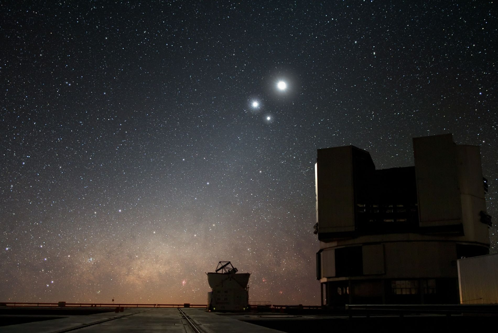
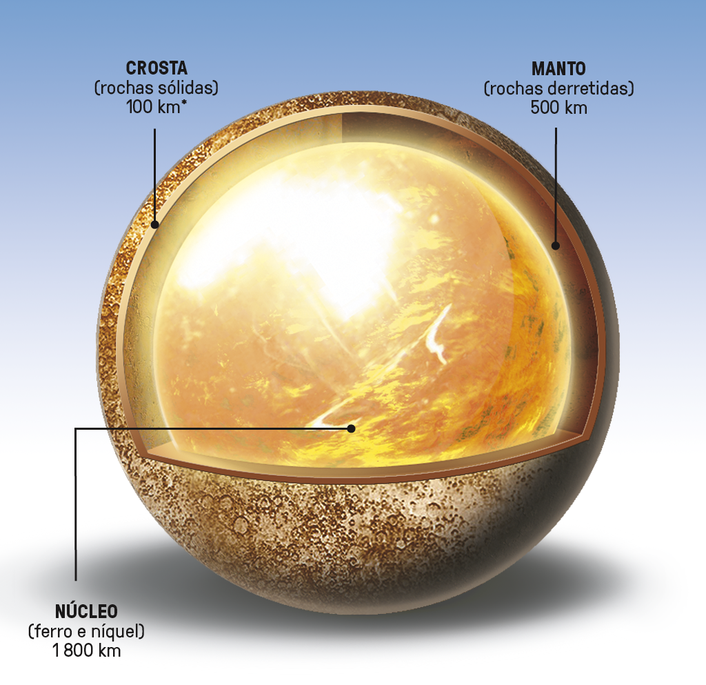
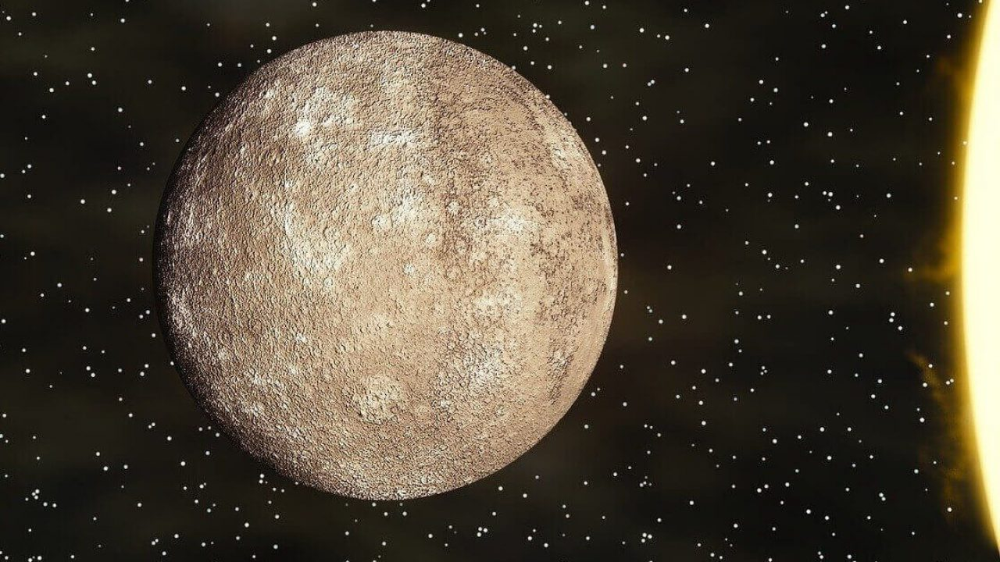

Mercúrio
O Planeta Mais Veloz e Pequeno
Imagine um planeta que viaja tão rápido pelo espaço que completa uma órbita ao redor do Sol em apenas 88 dias terrestres. Este é Mercúrio, o planeta mais próximo do Sol em nosso sistema solar. Mercúrio é um planeta pequeno e rochoso, com um diâmetro de apenas cerca de 4.880 quilômetros, tornando-o menor do que algumas luas em nosso sistema solar.
História e Observação
A observação de Mercúrio remonta a civilizações antigas, incluindo os sumérios e babilônios. No entanto, devido à sua proximidade com o Sol, frequentemente era difícil de observar a olho nu e muitas vezes confundido com estrelas. Os gregos antigos chamaram o planeta de "Hermes" em homenagem ao deus mensageiro, enquanto os romanos o associaram ao seu próprio deus mensageiro, Mercúrio.
Mercúrio tem uma relação intrigante com a Terra. Geralmente é mais visível ao amanhecer ou ao entardecer, nunca muito longe do horizonte. Sua aparição é brevemente interrompida quando fica muito próximo ao horizonte. Assim como a Lua, Mercúrio passa por uma série de fases quando observado da Terra, desde "crescente" até "cheia" e de volta a "minguante", à medida que muda de posição em relação ao Sol.
Composição Química e Estrutura
A composição química de Mercúrio é predominantemente rochosa, composta principalmente por silicatos e basaltos em sua crosta. Além disso, traços de elementos como ferro, alumínio, cálcio, magnésio e até mesmo traços de ouro e prata foram detectados em sua superfície. Embora Mercúrio seja um planeta rochoso, sua pequena atmosfera é muito tênue e composta principalmente por traços de oxigênio, sódio, hidrogênio e hélio. Essa atmosfera praticamente inexistente não é capaz de reter calor, resultando em variações extremas de temperatura entre o dia e a noite.
Curiosidades
Longos Dias: Embora sua órbita seja rápida, Mercúrio tem um dia extremamente longo em relação ao seu ano. Um dia em Mercúrio, que é o tempo que leva para o planeta girar completamente em seu eixo, dura cerca de 176 dias terrestres.
Influência Gravitacional: A proximidade de Mercúrio com o Sol resulta em efeitos gravitacionais notáveis. Sua órbita sofre perturbações da teoria da relatividade de Einstein, tornando-se uma ferramenta para testar essa teoria fundamental da física.
Presença de Gelo: Apesar das temperaturas abrasadoras na superfície, a presença de gelo foi detectada nas regiões polares de Mercúrio. Em áreas permanentemente sombreadas, acredita-se que o gelo de água e até mesmo gelo de dióxido de carbono (CO2) possam existir.
